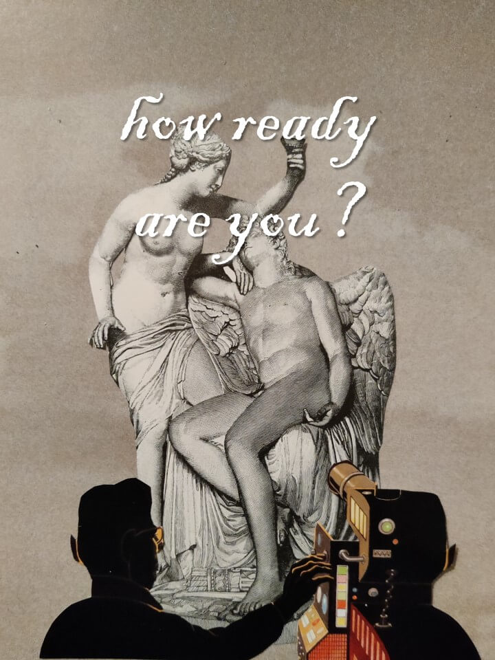

itisnaan
i.e
shardul
nanivadekar
on this webpage, you will find a
comprehensive study on the life of
shardul nanivadekar, a man shrouded
in mystery.
shardul
is a man
of many talents. he
is constantly chasing
a new idea. like this
latest one he had
last year.
fromthe
houseof
naan
i.e
a cute
project
our organization:
'fromthehouseofnaan' was founded in
2020, the year of the devil.
in this difficult span of a year, the
founder(-s) fought extreme
conditions(and the devil) to receive
rewards(money).
since then 'fromthehouseofnaan' has
continued to fight extreme
conditions(and the devil's friends(as the
the devil was dead and all his friends loved
him dearly)) for money.
\n